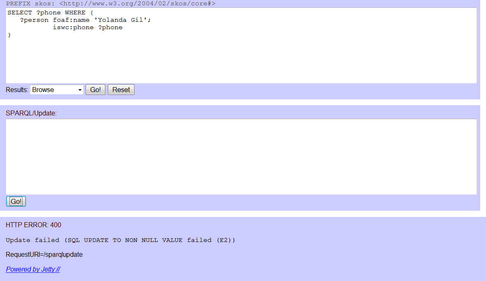

- http://d2rqupdate.cs.technion.ac.il/downloads/d2r-update-server.zip or http://d2rqupdate.cs.technion.ac.il/downloads/d2r-update-server.tar.gz
- Extract the d2r-update-server directory
- Download JSqlParser from http://sourceforge.net/projects/jsqlparser/
- Extract the jsqlparser directory (no matter to which location).
- Copy lib/jsqlparser.jar from the directory of jsqlparser to the lib directory inside the root directory of D2R/Update Server (the extracted directory d2r-update-server)
-
Download JGraphT from http://www.jgrapht.org/
-
For Windows:
- http://sourceforge.net/projects/jgrapht/files/JGraphT/Version%200.8.1/jgrapht-0.8.1.zip/download
- Extract the jgrapht directory (no matter to which location).
-
For other OS:
- http://sourceforge.net/projects/jgrapht/files/JGraphT/Version%200.8.1/jgrapht-0.8.1.tar.gz/download
-
$ tar xfz jgrapht-0.8.1.tar.gz
-
For Windows:
- Copy the jgrapht-jdk1.6.jar from the directory of the jgrapht to the lib directory inside the root directory of D2R/Update Server.
Download a dump of an example database (with some entries from the ISWC 2002 conference): http://www.d2rq.org/example/iswc-mysql.sql
$ mysql -u [username] -p[password] < iswc-mysql.sql
show tables;and
select FirstName, LastName, email from persons;
d2r-server -p 8080 mapping-iswc.ttl
SELECT ?phone WHERE {
?person foaf:name 'Yolanda Gil';
iswc:phone ?phone
}
Verify that the phone number returned by the query is indeed the phone number in the database. Run the following SQL query:
SELECT Phone FROM persons WHERE FirstName = 'Yolanda' AND LastName = 'Gil';
MODIFY DELETE {
?person iswc:phone '310-448-8794'
}
INSERT {
?person iswc:phone '222-222-2222'
}
WHERE {
?person foaf:name 'Yolanda Gil'
}
Write this statement into the input area for SPARQL/Update:
Push the Go! button under the SPARQL/Update input area. You will see the SPARQL/Update statement disappears and the SPARQL result is updated to the new value.
Let's verify that the phone number has indeed been changed in the database. Run the previous SQL query:
Bingo ! The phone number is 222-222-2222, as was intended.
DELETE {
?person iswc:phone '222-222-2222'
}
WHERE {
?person foaf:name 'Yolanda Gil'
}
You will see that SPARQL Result has changed to "no results":
Verify that the phone number has been deleted (set to NULL) - run the previous SQL query:
INSERT {
?person iswc:phone '310-448-8794'
}
WHERE {
?person foaf:name 'Yolanda Gil'
}
Please note that we could have combined the previous two steps into one MODIFY-DELETE-INSERT statement:
MODIFY DELETE {
?person iswc:phone '222-222-2222'
}
INSERT {
?person iswc:phone '310-448-8794'
}
WHERE {
?person foaf:name 'Yolanda Gil'
}
 That means that in order to insert a new value (for a functional property) we have to delete the previous value, in two separate statements - DELETE and INSERT, or in one combined statement MODIFY-DELETE-INSERT.
INSERT {
<http://localhost:8080/resource/persons/14> rdf:type iswc:Researcher;
foaf:name 'Richard Cyganiak';
iswc:address 'Office 102, Deri Galway';
foaf:mbox <mailto:Richard.Cyganiak@fakemail.com>;
foaf:homepage <http://richard.cyganiak.de>;
iswc:phone '777-77-7777';
iswc:research_interests <http://localhost:8080/resource/topics/5>;
iswc:research_interests <http://localhost:8080/resource/topics/10>
}
We have assigned Richard the URI <http://localhost:8080/resource/persons/14> that corresponds to PerID 14.
Let's see that the information about Richard has been added to the persons and to the rel_person_topic tables:
DELETE {
<http://localhost:8080/resource/persons/14> rdf:type iswc:Researcher;
foaf:name 'Richard Cyganiak';
iswc:address 'Office 102, Deri Galway';
foaf:mbox <mailto:Richard.Cyganiak@fakemail.com>;
foaf:homepage <http://richard.cyganiak.de>;
iswc:phone '777-77-7777';
iswc:research_interests <http://localhost:8080/resource/topics/5>;
iswc:research_interests <http://localhost:8080/resource/topics/10>
}
Let's see that all the information about Richard has been deleted from both the persons and the rel_person_topic tables:

Please note that the order of the triples in the ISNERT or DELETE statements is unimportant - the D2RQ/Update groups the triples by subject and table in order to perform as little SQL INSERT/UPDATE/DELETE operations as possible, one operation per one row in a table. So, for example, the last SPARQL/Update DELETE statement of eight triples is performed by only three SQL DELETE statements. You can see which SQL statements are executed by D2R/Update Sever in the DEBUG log printings of ExecutionEngine:
In addition, D2RQ/Update executes SQL INSERT/UPDATE/DELETE operations according to foreign key dependencies between tables. Please note that the last DELETE operations were executed first on the rel_person_topic table and second on persons table, disregarding the original order of the triples in the SPARQL/Update DELETE statement. Such order was chosen by D2RQ/Update since there is a foregn key dependecy from the PersonId column of rel_person_topic table on the column PerID of the persons table.